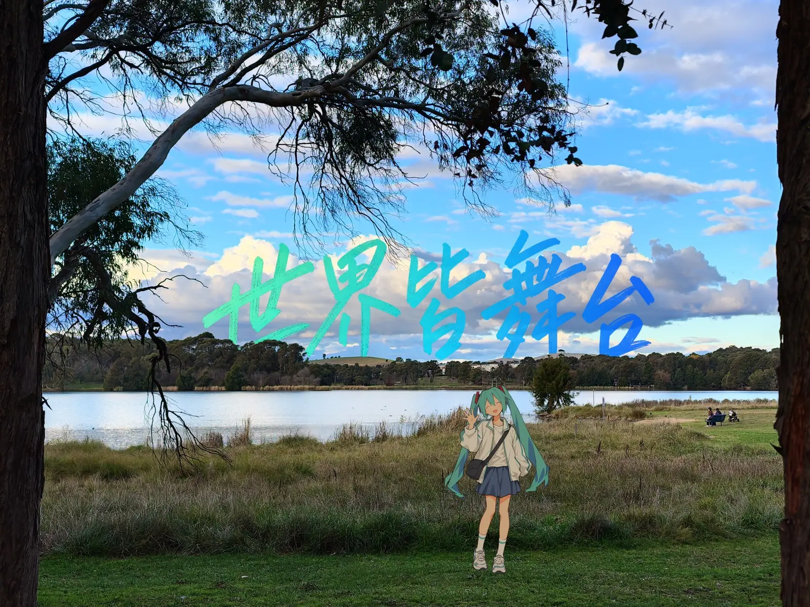

01
Photography
Urban scenes, quiet light and everyday life. I am developing a personal photobook, 世界皆舞台 (All the World’s a Stage).

Photography, music and the mechanics of things that move.
01
Urban scenes, quiet light and everyday life. I am developing a personal photobook, 世界皆舞台 (All the World’s a Stage).

02
Trumpet player in the Australian National University orchestra.
03
Powertrain assembly engineer with the ANU Formula Sport team (ANUFS).
Personal photobook / In development
All the World’s a Stage


1 / 10
FSAE Australasia competition
A photographic collection in preparation. Selected photographs will be added as the sequence takes shape.